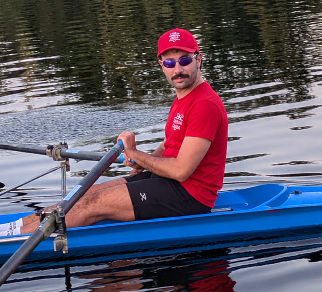

Mounir Messaoudi
PhD candidate · SAIRPICO team, Inria · University of Rennes, France

I am a PhD candidate in the SAIRPICO team at Inria, University of Rennes, advised by Charles Kervrann. I develop deep learning methods for biomedical image analysis that remain reliable on noisy, heterogeneous data, with a focus on cryo-electron tomography (cryo-ET).
My work covers neural networks that are invariant to photometric corruptions (ICLR 2026), anisotropy-aware training for particle picking (ISBI 2026), and realistic simulation of tomograms. I am currently building a universal particle picker that biologists can directly apply to their own data.
Before my PhD, I studied applied mathematics and computer science at CY Tech and AI at Paris Dauphine – PSL, and worked with Thomas Walter at Institut Curie on breast cancer histopathology. Outside of research, I row across the rivers of Europe.
I am looking for a new position, starting September 2027.
news
| Apr 2027 | Next stop: the Tulip Crossing in the Netherlands, by rowing! |
|---|---|
| Mar 2027 | I will present new work at IABM 2027 in Strasbourg, 22–24 March. |
| Nov 2026 | Invited talk at the Biological Image Analysis Session (BIS 2.0), IGDR, Rennes, on 26 November. |
| Oct 2026 | Back to teaching Introduction to Computer Vision at the University of Rennes. |
| Sep 2026 | Rowed across Paris in the Traversée de Paris. |
| Jul 2026 | Presented our ICLR paper at CAP & RFIAP 2026 in Montpellier. |
|---|---|
| May 2026 | Organizer of Pint of Science 2026 in Rennes. |
| May 2026 | Presented both papers at the Life Science PhD Symposium (3rd edition) in Rennes. |
| Apr 2026 | Poster presentation of our paper at ICLR 2026 in Rio de Janeiro. |
| Apr 2026 | Oral presentation of our paper at ISBI 2026 in London. |
| Mar 2026 | Presented our ISBI paper at IABM 2026 in Lyon. |
| Jan 2026 | Presented our ISBI paper at AI WILD West 2026 in Rennes. |
publications
-
Designing Affine-Invariant Neural Networks for Photometric Corruption Robustness and Generalization
ICLR 2026 · International Conference on Learning Representations, poster
PDFVideo
contact
The best way to reach me is via email: mounir.mdi@proton.me